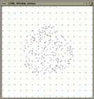

A variety of generators for random numbers and geometric objects is provided in CGAL. They are useful as synthetic test data sets, e.g. for testing algorithms on degenerate object sets and for performance analysis.
The first section describes the random number source used for random generators. The second section documents generators for point sets, the third section for segments. Note that the STL algorithm random_shuffle is useful in this context to achieve random permutations (e.g. for points on a grid).
Two support functions are provided. CGAL_copy_n() copies items from an input iterator to an output iterator which is useful for possibly infinite sequences of random geometric objects[^1]. CGAL_random_selection chooses items at random from a random access iterator range which is useful to produce degenerate input data sets with multiple entries of identical items.
#include <CGAL/copy_n.h>
#include <CGAL/random_selection.h>
| template <class RandomAccessIterator, class Size, class OutputIterator, class Random> | ||||
| OutputIterator |
| |||
|
choose a random item from the range
firstlast
and write it to result, each item from the range with equal
probability. Repeat this times, thus writing
items to result. A single random number is
needed from rnd for each item. Returns the value of
result after inserting the items.
Precondition: Random is a random number generator type as provided by the STL or by CGAL_Random. | ||||
#include <CGAL/point_generators_2.h>
| void |
| |||
| builds a point in . Point is the point type in question. | ||||
The random point generators are implemented as classes that satisfies
the requirements for input iterators. They represent the possibly
infinite sequence of randomly generated points. Each call to the
operator* returns a new point. To create a finite sequence in a
container, the function CGAL_copy_n() could be used, see
Section  .
.
| |||
|
is an input iterator creating points of type
P uniformly distributed in the open disc with radius
, i.e. *g .
Two random numbers are needed from rnd for each point.
Precondition: a function CGAL_build_point() for the point type P exists.
| |||
| |||
|
is an input iterator creating points of type
P uniformly distributed on the circle with radius
, i.e. *g . A
single random number is needed from rnd for each point.
Precondition: a function CGAL_build_point() for the point type P exists.
| |||
| |||
|
is an input iterator creating points of type
P uniformly distributed in the half-open square with side
length , centered at the origin, i.e.
*g
and . Two random
numbers are needed from rnd for each point.
Precondition: a function CGAL_build_point() for the point type P exists.
| |||
| |||
|
is an input iterator creating points of type
P uniformly distributed on the boundary of the square with
side length , centered at the origin, i.e.
*g one coordinate is
either or and for the
other coordinate holds
. A single random number
is needed from rnd for each point.
Precondition: a function CGAL_build_point() for the point type P exists.
| |||
| |||
|
is an input iterator creating points of type
P uniformly distributed on the segment from
to except , i.e.
*g
where . A single random number is
needed from rnd for each point.
Precondition: a function CGAL_build_point() for the point type P exists. The expressions CGAL_to_double(p.x()) and CGAL_to_double(p.y()) must result in the respective double representation of the coordinates and similar for .
| |||
Grid points are produced by generating functions writing to an output iterator.
| template <class OutputIterator> | ||||
| OutputIterator |
| |||
|
creates the first points on the regular
grid within the square
. Returns
the value of after inserting the
points. Precondition: a function CGAL_build_point() for the point type and must be assignable to the value type of OutputIterator. | ||||
| template <class P, class OutputIterator> | ||||
| OutputIterator |
| |||
| creates points regular spaced on the segment from to , i.e. . Returns the value of after inserting the points. | ||||
Degenerate input sets like grid points can be randomly perturbed by a small amount to produce quasi-degenerate test sets. This challenges numerical stability of algorithms using inexact arithmetic and exact predicates to compute the sign of expressions slightly off from zero.
| template <class ForwardIterator> | ||||
| void |
| |||
|
perturbs the points in the range
firstlast
by replacing each point with a random point from the rectangle
xeps yeps centered at the
original point. Two random numbers are needed from rnd for
each point. Precondition: a function CGAL_build_point() for the value type of the ForwardIterator exists. The expressions CGAL_to_double((*first).x()) and CGAL_to_double((*first).y()) must result in the respective coordinate values. | ||||
For a given point set certain kinds of degeneracies can be produced
adding new points. The CGAL_random_selection() function is
useful to generate multiple entries of identical points, see
Section  . The
CGAL_random_collinear_points_2() function adds collinearities to
a point set.
. The
CGAL_random_collinear_points_2() function adds collinearities to
a point set.
| template <class RandomAccessIterator, class OutputIterator> | ||||
| OutputIterator |
| |||
|
randomly chooses two points from the range
firstlast,
creates a random third point on the segment connecting this two
points, and writes it to first2. Repeats this
times, thus writing points to first2 that are
collinear with points in the range
firstlast.
Three random numbers are needed from rnd for each point.
Returns the value of first2 after inserting the
points. Precondition: a function CGAL_build_point() for the value type of the ForwardIterator exists. The expressions CGAL_to_double((*first).x()) and CGAL_to_double((*first).y()) must result in the respective coordinate values. | ||||
/* generators_prog1.C */
/* ------------------------------ */
/* CGAL example program for point generators. */
#include <CGAL/basic.h>
#include <assert.h>
#include <vector.h>
#include <algo.h>
#include <CGAL/Cartesian.h>
#include <CGAL/Point_2.h>
#include <CGAL/point_generators_2.h>
#include <CGAL/copy_n.h>
#include <CGAL/random_selection.h>
#include <CGAL/IO/Window_stream.h> /* only for visualization used */
typedef CGAL_Cartesian<double> R;
typedef CGAL_Point_2<R> Point;
int main()
{
/* Create test point set. Prepare a vector for 1000 points. */
vector<Point> points;
points.reserve(1000);
/* Create 600 points within a disc of radius 150. */
CGAL_Random_points_in_disc_2<Point> g( 150.0);
CGAL_copy_n( g, 600, back_inserter( points));
/* Create 200 points from a 15 x 15 grid. */
CGAL_points_on_square_grid_2( 500.0, 200, back_inserter(points),(Point*)0);
/* Select 100 points randomly and append them at the end of */
/* the current vector of points. */
CGAL_random_selection( points.begin(), points.end(), 100,
back_inserter( points));
/* Create 100 points that are collinear to two randomly chosen */
/* points and append them to the current vector of points. */
CGAL_random_collinear_points_2( points.begin(), points.end(), 100,
back_inserter( points));
/* Check that we have really created 1000 points. */
assert( points.size() == 1000);
/* Use a random permutation to hide the creation history */
/* of the point set. */
random_shuffle( points.begin(), points.end(), CGAL_random);
/* Visualize point set. Can be omitted, see example programs */
/* in the CGAL source code distribution. */
CGAL_Window_stream W(512, 512);
W.init(-256.0, 255.0, -256.0);
W << CGAL_BLACK;
for( vector<Point>::iterator i = points.begin(); i != points.end(); i++)
W << *i;
/* Wait for program termination. */
char c;
cout << " Type any character to continue: " << endl;
cin >> c;
cout << " done" << endl;
return 0;
}
| Figure: Output of example program for point generators. |

|
The second example demonstrates the point generators with integer
points. Arithmetic with double's is sufficient to produce
regular integer grids. See Figure
 for the example output.
for the example output.
/* generators_prog2.C */
/* ------------------------------ */
/* CGAL example program for point generators creating integer points. */
#include <CGAL/basic.h>
#include <assert.h>
#include <vector.h>
#include <algo.h>
#include <CGAL/Cartesian.h>
#include <CGAL/Point_2.h>
typedef CGAL_Cartesian<int> R;
typedef CGAL_Point_2<R> Point;
/* Provide your own CGAL_build_point function. */
inline
Point& CGAL_build_point( double x, double y, Point& p) {
p = Point( int(x), int(y));
return p;
}
#include <CGAL/point_generators_2.h>
#include <CGAL/copy_n.h>
#include <CGAL/IO/Window_stream.h> /* only for visualization used */
int main()
{
/* Create test point set. Prepare a vector for 400 points. */
vector<Point> points;
points.reserve(400);
/* Create 250 points from a 16 x 16 grid. Note that the double */
/* arithmetic _is_ sufficient to produce exact integer grid points. */
/* The distance between neighbors is 34 pixel = 510 / 15. */
CGAL_points_on_square_grid_2( 510.0, 250, back_inserter(points),(Point*)0);
/* Lower, left corner. */
assert( points[0].x() == -255);
assert( points[0].y() == -255);
/* Upper, right corner. Note that 6 points are missing to fill the grid. */
assert( points[249].x() == 255 - 6 * 34);
assert( points[249].y() == 255);
/* Create 250 points within a disc of radius 150. */
CGAL_Random_points_in_disc_2<Point> g( 150.0);
CGAL_copy_n( g, 250, back_inserter( points));
/* Check that we have really created 500 points. */
assert( points.size() == 500);
/* Visualize point set. Can be omitted, see example programs */
/* in the CGAL source code distribution. */
CGAL_Window_stream W(524, 524);
W.init(-262.0, 261.0, -262.0);
W << CGAL_BLACK;
for( vector<Point>::iterator i = points.begin(); i != points.end(); i++)
W << *i;
/* Wait for program termination. */
char c;
cout << " Type any character to continue: " << endl;
cin >> c;
cout << " done" << endl;
return 0;
}
| Figure: Output of example program for point generators working on integer points. |  |
The following generic segment generator uses two point generators to create a segment from two endpoints. This is a design example how further generators could look like - for segments and for other higher level objects.
{kind=link}